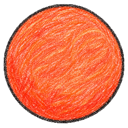
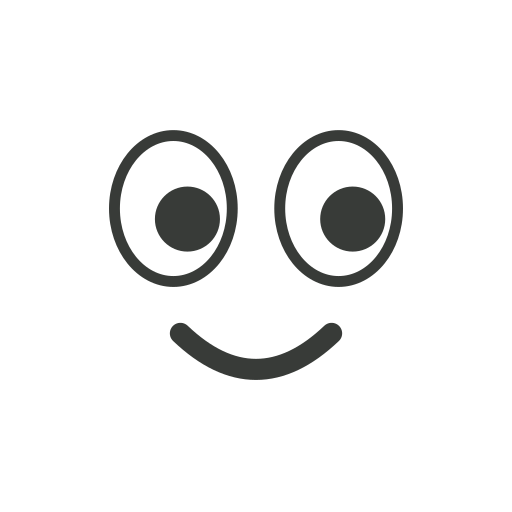
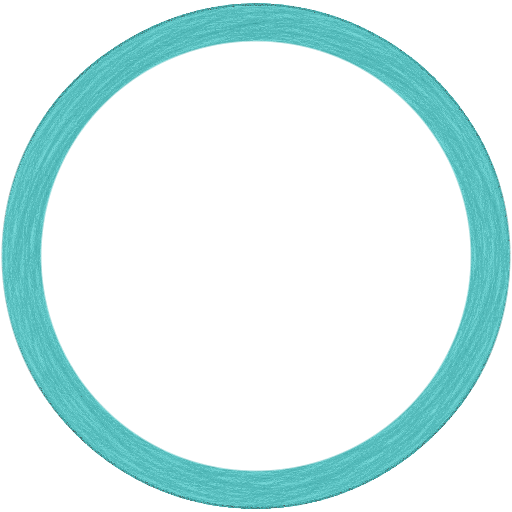
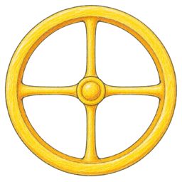
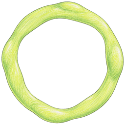
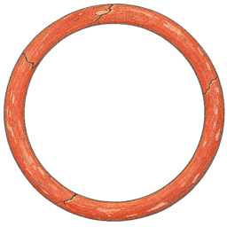
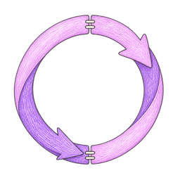
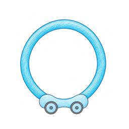
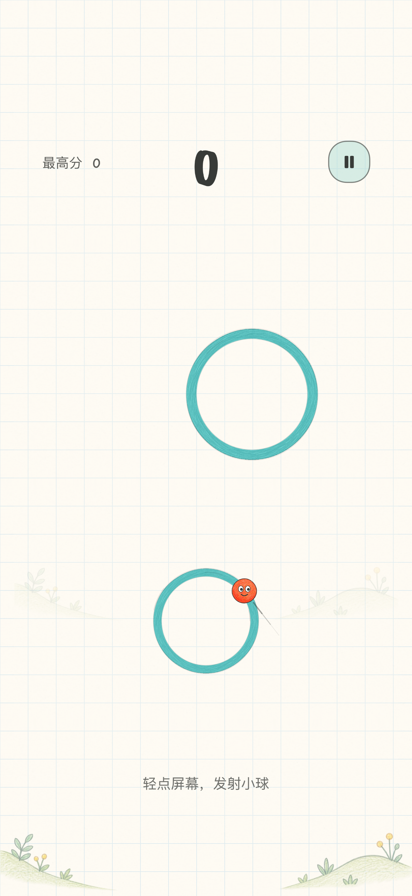
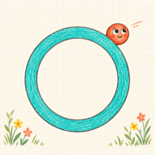

普通环
大小不同，瞄准的时机也不同。


NEXT ORBIT
看准方向，抓住时机01 / 很简单，也很考验时机
手指不控制方向，只控制发射时机。小球沿当前圆环的切线飞出；等短虚线指向下一个圆环，再轻点屏幕。
可跳过的新手练习先带你瞄准，再用三页图解说明计分，最后认识各种圆环。
小球绕圈时，留意它前方的切线提示。
点击屏幕任意位置，选择出发的时机。
接住新的圆环，找到下一次出发的节奏。
02 / 每一圈，都有一点小脾气
熟悉的绿圈有大有小。特别的圆环，则为下一次起跳换一点节奏。
大小不同，瞄准的时机也不同。

接住后，绕圈速度提高一级。

接住后，绕圈速度降低一级。

绕满一圈会碎掉，记得及时跳走。

接住后，绕圈方向反转一次。

左右移动，注意提前瞄准；接住后停稳。
03 / 多一点选择，多一点判断
随着进程推进，有时会同时出现三、四个目标。选择更稳的一圈，或试试更小的落点。移动环的行程与速度也会逐步增加。
开局或落环后 3 秒内发射，并成功接住下个环，就能延续连跳。看的是发射时机，飞行结束可以晚一点。
超时会清空连跳，已得分保留。暂停不计时；特殊环本身不额外加分。
04 / 游戏里的样子
小球会看一眼、眨眨眼，圆环在起跳和落环时轻轻回弹。一声固定的“咚”，让每次接住都更有落点。
一局结束后，可以用昵称保存成绩。每个昵称保留最高分，同分并列。不需要 Game Center 或其他账号；当前版本没有联网排行榜。

游戏本身可以离线游玩。当前版本没有账号登录、联网成绩上传或云同步功能。
当前支持 iOS / iPadOS 17 及以上的 iPhone 与 iPad。iPhone 使用竖屏，iPad 支持横竖屏。
我们正在准备 App Store 上架资料。正式下载地址确认后，会在这里提供；目前没有可用的 App Store 下载链接。
首次开始时有一个可跳过的小教程。之后也可以从菜单里的“玩法教学”重新打开，练习不会改动你的正式成绩。

一款适合闲暇片刻的手绘小游戏。
App Store 上架准备中